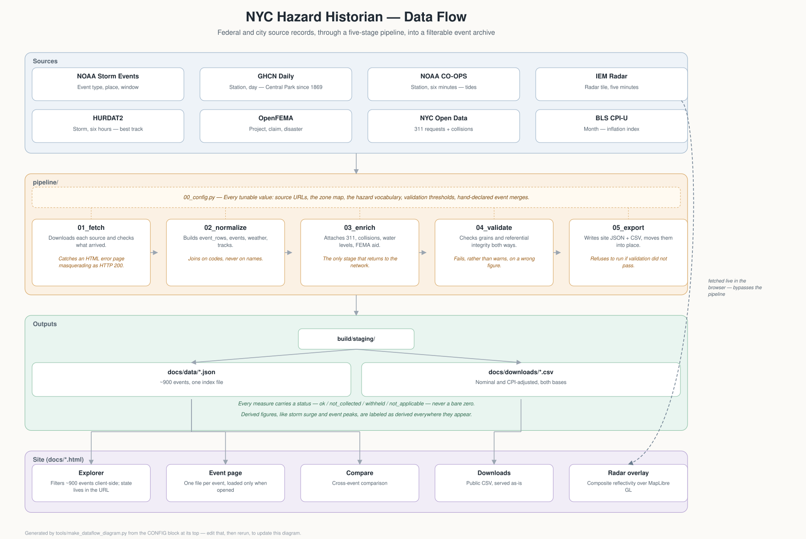

Method and data
What each figure is a figure of, where it stops, and how to take the whole thing away with you.
Downloads
Site, downloads and per-event files are written from the same objects in one pass. They cannot disagree.
Events
One row per event, of them. Every headline measure, with a status column beside each one.
Evidence
One row per National Weather Service record,
of them. This is the grain the source
publishes. Join on event_id.
Machine readable
Static JSON. There is no API: static files answer the same questions at no running cost and cannot go down on their own.
- data/index.json, the search index
- data/meta.json, sources and vocabularies
data/events/{event_id}.json, one file per event
Built . The compiled data is free to reuse with attribution. The underlying data carries the terms of the agencies that publish it. If you republish a figure, carry its status and its period with it.
Read the status before the value
A number nobody measured is never shown as a zero. The tool this
rebuilds prints 0 % absent for school attendance during
Hurricane Sandy, when schools were shut for a week.
Every measure carries one of five statuses, and they travel into the downloads as their own columns. A spreadsheet with an empty cell for both "nothing happened" and "nobody looked" is the same fault in a different container.
Not collected is the common case, not the edge case. Collisions begin in July 2012, 311 in 2004, against an event record that begins in 1958. The build fails if not one measure in it is marked not applicable, because that would mean the distinction had been lost.
What an event is
NOAA publishes a Storm Events Database. One row is one hazard type, in one place, over one time window: a cold spell in January 2000 is five rows, one per borough. The Weather Service groups those rows into an episode, which is one weather system.
An event here is an episode. That was tested, not assumed: the four episodes in January 2000 match the first four events in the city's own tool exactly.
Hurricane Sandy is the exception. The Weather Service filed it as two episodes, a coastal flood and a high wind. Merging overlapping episodes automatically gave 982 events at zero tolerance and 614 at six hours, too sensitive for the primary unit of a site. Merges are declared by hand instead. There are very few, and a merged event says so at the top of its page.
Where New York City is
The source files a location as a county or a forecast zone, depending on the event type. Counties alone lose most winter, heat and wind events. Both are used, twelve codes in all.
Queens was one zone and later became Northern and Southern Queens, so Queens can appear twice in one episode and sub-borough geography exists for Queens alone in the later period. Borough is the only grain honest across the whole record. New York Harbor is inside the city's waters and is carried as its own place; neighbouring marine zones are not.
Codes are joined on, never names. The same marine zone appears as
both NEW YORK HARBOR and New York Harbor in
different years.
The hazard names
The source publishes 26 event types for New York City, several of them marine twins of a land type. They fold into eighteen hazard values, and that folding is this project's only change to the vocabulary. An unmapped source type fails the build rather than falling into an "other" bucket.
There is no layer above those eighteen. An earlier version grouped them into Water, Winter, Temperature and Wind, which no source publishes and which filed drought under Temperature. The groups and their colors are gone. The explorer lists the hazard values with the number of events holding each.
Where the numbers come from
The event record
NOAA Storm Events, 1950 to the present. Narratives, hazard types, death and injury counts and damage estimates are the Weather Service's own. All event types have been recorded only since 1996; before that the database holds tornado, hail and wind alone. An event page before 1996 says so.
Weather
Daily summaries from the Global Historical Climatology Network at Central Park, LaGuardia, John F. Kennedy and Newark.
- A high or a low is the most extreme single daily reading at one station, with the station and date beside it. Not a citywide figure, not an average.
- Rainfall and snowfall totals are summed at the wettest single station, never across stations, which would count one storm four times. The note says how many days of the window that station reported.
- The wind figure is the fastest two-minute wind, GHCN element WSF2. It is not a gust. Peak gust is published separately as WSFG and these four stations do not report it.
- Daily rather than hourly summaries: the hourly files run about seven megabytes per station-year, roughly two gigabytes here, for measures the site reports as event peaks anyway. The cost is that rainfall rate and heat index cannot be derived, so they are not offered.
Water levels
NOAA tide gauge readings at The Battery, on the mean lower low water datum, in Coordinated Universal Time. Storm surge is not published as a measurement: it is the observed level minus the predicted tide, calculated here and labeled as derived everywhere it appears.
Water levels are read only where a coastal hazard is on the event. An inland heat wave has no tide panel, and its comparison cell says "not read here" rather than sitting blank.
Radar
Composite reflectivity tiles from the Iowa Environmental Mesonet at Iowa State University. Two products cover different halves of the record and the site names the one it is showing. This is a national composite, not one radar's view of the city.
Tiles are read live from the archive rather than copied, so the radar panel depends on another service answering. When it does not, the panel says so: a missing reflectivity layer is not clear weather. The frame step widens for long events, so a two-week drought does not request thousands of tiles.
Federal assistance
Assistance is obligated against a declared disaster, not against a storm. A declaration has its own incident period and can cover several events here: DR-1083 is matched to fourteen. The same total then appears on each of their pages, because that is what the source publishes. It is not fourteen storms' worth of money.
So: no page ranks or sorts events by assistance, the explorer carries a count of declarations rather than a column of dollars, every assistance figure prints the declaration it belongs to and how many events share it, and the comparison sheet groups those rows under what they are obligated against.
- Declarations are matched on overlapping incident period, restricted to weather incident types and to periods short enough to be about one storm. Without that restriction the COVID-19 declarations, whose incident period runs 1,207 days, attached billions to every storm for three years. The build now fails if a long-period declaration is attached.
- Public assistance is the federal share obligated for New York City counties. Money committed, not money spent, and not a measure of loss. Obligations continue for years, so a total is true only as at the build date.
- Housing assistance is the Individuals and Households Program amount approved for New York City ZIP codes. Owners and renters are separate programmes covering separate populations; the site sums them and says so.
- Flood insurance claims are different in kind. A claim carries a date of loss, so it joins to the event window itself, and claims exist for events that were never declared.
Consequences, and their windows
311 service requests and police collision reports. The windows are not the same and the site does not pretend they are. 311 counts run over the event window and the following day, because a complaint about a storm is often filed the next morning. Collisions are timestamped when they happened, so they are counted inside the window only. Flood insurance claims follow the 311 rule. Each panel states the window it used.
311 is eight datasets, split by period, and the complaint vocabulary moves between them. Counts are fetched as daily aggregates by borough rather than as rows. There is no 311 record before 2004.
These counts measure reporting as well as impact. A neighbourhood that calls 311 more will appear to flood more.
Dollars
Every dollar figure appears twice, as published and adjusted, in
dollars, using the Bureau of Labor
Statistics consumer price index for New York-Newark-Jersey City,
series . The metropolitan series is used
rather than the national one, which understates a New York loss.
Sources
Generated from the pipeline's own manifest, so this table cannot credit a source the build did not read.
| Source | Grain | Coverage | Caveat |
|---|
What is not here
Four capabilities in the city's tool could not be rebuilt from public data. They are absent from every event, for the same reason each time, so they are set out once here rather than repeated under nine hundred events as though each had its own gap.
- School attendance. Daily present, absent and released counts by school are supplied to the city directly and are not published. The existing tool shows 0 per cent absent for Hurricane Sandy, when schools were closed for a week.
- Power outages. Utilities report to the New York State Department of Public Service under a data sharing agreement. No public historical series exists at borough level or finer.
- Sanitation operations. Salt usage and plow data are public. Collection tonnage and equipment deployment are not. Publishing two of six measures under one heading would mislead.
- Subway ridership. Daily public figures begin in 2020. Nothing public reproduces station-level ridership earlier.
Also absent: events before 1950, which the city's tool offers back to 1785 from a source this project has not identified; flood sensors, which began around 2021; air quality, published at county-day grain, coarser than an event chart would imply; and NYCEM activation records, which are operational and unpublished.
Known discrepancies
The city's tool reports 2,431 events. The New York City land records in Storm Events number 2,097, and adding the New York Harbor marine zone gives 2,392. The remaining 39 are unaccounted for and are consistent with, but not confirmed as, entries from before 1950.
For Hurricane Sandy, the Storm Events records inside the event window carry 45 direct deaths. The city's tool reports 43. Both come from somewhere defensible. This site shows the figure its own source publishes and names the difference rather than reconciling it silently.
How this is built
Eight sources, five Python stages, one archive. The diagram is generated from the same configuration the pipeline runs on. Open the interactive version.

Five stages, using the Python standard library. No install step, no virtual environment. Then static HTML, CSS and JavaScript with no framework and no build step, served as files on GitHub Pages.
01_fetchdownloads each source and checks that what arrived is what the next stage needs. A moved NOAA file and a FEMA outage both answer HTTP 200 with an HTML error page.02_normalizeproduces the canonical tables: event rows, events, station-days, track positions.03_enrichattaches 311 counts, collisions, water levels and federal assistance. The only stage that returns to the network after the event list exists.04_validatetests the grains rather than trusting them, checks referential integrity in both directions, and fails rather than warns when a figure would be wrong.05_exportwrites the site data and the downloads into a staging directory and moves them into place in one step. It refuses to run if validation failed, so a bad build leaves the published files untouched.
Every tunable value, including source URLs, the zone and county
mapping, the hazard vocabulary and the validation thresholds, lives in
pipeline/00_config.py. Failures stop the build and never
reach this page. What follows is what the last build noticed and
allowed.